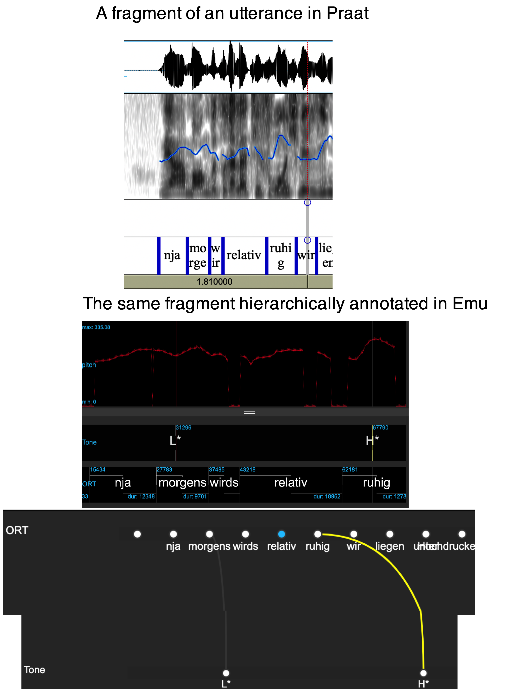
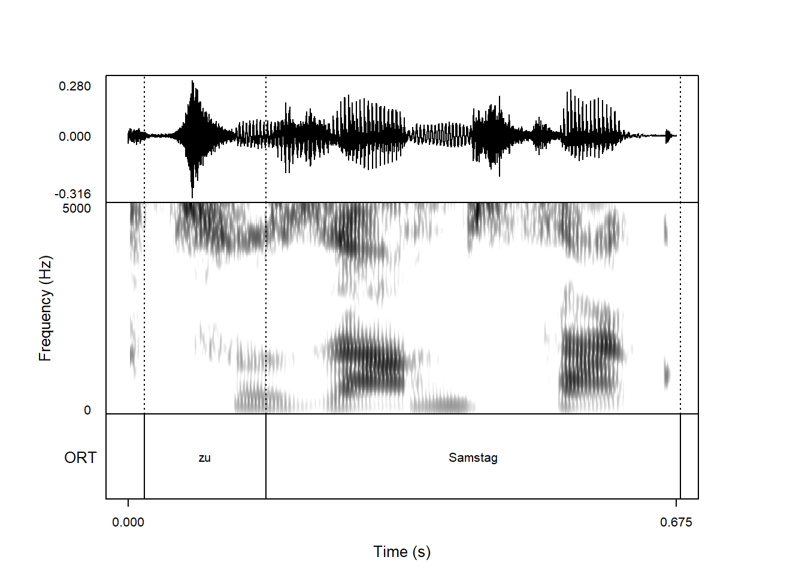

library(tidyverse)
library(emuR)
library(wrassp)4 Converting a Praat TextGrid collection and tracking pitch
4.1 Objective and preliminaries
The aim of this chapter is to show how to get from a Praat .TextGrid format to an Emu database format. We will show how to convert pairs of .wav and .TextGrid files to an Emu database, how to generate pitch tracks over the sound files, how to add annotation levels in the style of Praat’s point tiers, and finally how to convert the flat annotation structure of Praat TextGrids into the layered annotation structure of an Emu database (see Chapter 1).
Figure 4.1 exemplifies an annotated sound file in Praat with pitch overlaid on the spectrogram. Below this, we see the Emu-webApp we want to achieve, with a visible pitch track, annotations, and a layered annotation structure.

The assumption is that you already have an R project called ipsR and that it contains the directories emu_databases and testsample. If this is not the case, please go back and follow the preliminaries chapter.
Start up R in the project you are using for this course and load the usual libraries.
In R, store the path to the directory testsample as sourceDir in the following way:
sourceDir <- "./testsample"And also store in R the path to emu_databases as targetDir:
targetDir <- "./emu_databases"4.2 Converting Praat TextGrids
The directory testsample/praat on your computer contains a Praat-style database with .wav files and .TextGrid files. Define the path to this database in R and check that you can see these files with the list.files() function:
path.praat <- file.path(sourceDir, "praat")
list.files(path.praat) [1] "wetter1.TextGrid" "wetter1.wav" "wetter10.TextGrid"
[4] "wetter10.wav" "wetter11.TextGrid" "wetter11.wav"
[7] "wetter12.TextGrid" "wetter12.wav" "wetter13.TextGrid"
[10] "wetter13.wav" "wetter14.TextGrid" "wetter14.wav"
[13] "wetter15.TextGrid" "wetter15.wav" "wetter16.TextGrid"
[16] "wetter16.wav" "wetter17.TextGrid" "wetter17.wav"
[19] "wetter2.TextGrid" "wetter2.wav" "wetter3.TextGrid"
[22] "wetter3.wav" "wetter4.TextGrid" "wetter4.wav"
[25] "wetter6.TextGrid" "wetter6.wav" "wetter7.TextGrid"
[28] "wetter7.wav" The emuR function for converting the collection of .wav / .TextGrid pairs to an Emu database called and then storing the latter in targetDir (defined above) is convert_TextGridCollection(). It works like this:
convert_TextGridCollection(path.praat,
dbName = "praat",
targetDir = targetDir,
verbose = FALSE)The converted Praat database called praat_emuDB can now be loaded with load_emuDB():
praat_DB <- load_emuDB(file.path(targetDir, "praat_emuDB"),
verbose = FALSE)And its properties can be examined with the summary() command as we’ve seen in previous chapters.
summary(praat_DB)── Summary of emuDB ────────────────────────────────────────────────────────────Name: praat
UUID: 4c19bd0b-06eb-4500-b7ad-833ffceba0c9
Directory: C:\Users\rasmu\surfdrive\emuintro\emuintro\emu_databases\praat_emuDB
Session count: 1
Bundle count: 14
Annotation item count: 214
Label count: 214
Link count: 0 ── Database configuration ──────────────────────────────────────────────────────── SSFF track definitions ──dataramme med 0 kolonner og 0 rækker── Level definitions ── name type nrOfAttrDefs attrDefNames
ORT SEGMENT 1 ORT; ── Link definitions ──dataramme med 0 kolonner og 0 rækkerYou’ll see that there are no Link definitions, as .TextGrids do not offer this kind of structure.
The database can of course be viewed using the serve() command as we’ve seen in previous chapters.
serve(praat_DB, useViewer = FALSE)4.3 Calculating pitch with wrassp
The summary() above showed that there are no SSFF tracks associated with the database – this is also not a file structure that Praat understands. Recall from Chapter 2 that SSFF tracks store signal data that is timelocked to the audio signal. In this next step, we will generate SSFF tracks for praat_emuDB containing information about pitch.
In order to do this, we use the signal processing package wrassp. There are several different signal processing packages in R, and several of them have pitch tracking algorithms. We work with wrassp here because it was developed in conjunction with emuR, and thus is very easy to integrate with emuR.
To see the full range of signal processing routines available in wrassp, enter ?wrassp in the R console. There are two functions for calculating pitch: ksvF0() and mhsF0(). For this demonstration, we will use mhsF0().
The function mhsF0() (and other signal processing functions in wrassp) operates directly on one or more .wav files, and creates corresponding new files containing pitch tracks. It does not care whether those .wav files are part of an Emu database, so to speak. In order to add SSFF tracks that are based on the signal processing capabilities in wrassp directly to an Emu database, we can use the handy emuR function add_ssffTrackDefinition() with the argument onTheFlyFunctionName. The onTheFlyFunctionName should usually be one of the signal processing routines in wrassp, although other functions can also be used.
Here’s how to use mhsF0() to generate pitch tracks with the default settings and add them to a Emu database:
add_ssffTrackDefinition(praat_DB, name='pitch', onTheFlyFunctionName='mhsF0',
verbose = FALSE)If we run list_ssffTrackDefinitions() we will now see that an SSFF track called pitch with the file extension .pit has been added:
list_ssffTrackDefinitions(praat_DB)
Changing the pitch tracking parameters
It is often not a good idea to use the default parameters for pitch tracking. For example, mhsF0() and ksvF0() by default search for pitch in an extremely broad frequency range (between 50–600 Hz), and narrowing this down often gives better results. We can see all possible mhsF0() parameters using the args() function, which returns all arguments of a given function:
args(mhsF0)function (listOfFiles = NULL, optLogFilePath = NULL, beginTime = 0,
centerTime = FALSE, endTime = 0, windowShift = 5, gender = "u",
maxF = 600, minF = 50, minAmp = 50, minAC1 = 0.25, minRMS = 18,
maxZCR = 3000, minProb = 0.52, plainSpectrum = FALSE, toFile = TRUE,
explicitExt = NULL, outputDirectory = NULL, forceToLog = useWrasspLogger,
verbose = TRUE)
NULLAll of these arguments can be changed. If you want to change the settings when adding an SSFF track, you can pass a named list of parameters to the argument onTheFlyParams in the add_ssffTrackDefinition() call. A named list looks e.g. like this:
pitch_params <- list(maxF = 400, minF = 75)The function call to add pitch tracks with these parameters looks like this. Since we already have a track called pitch with the file extension pit, we call this one pitch2 and use the file extension pit2.
add_ssffTrackDefinition(praat_DB, name='pitch2',
onTheFlyFunctionName='mhsF0',
onTheFlyParams=pitch_params,
fileExtension='pit2',
verbose=FALSE)4.4 Displaying the pitch files in the Emu-webApp
As seen in Chapter 2, we can use the function get_signalCanvasesOrder() to see which signals are currently displayed in the database:
get_signalCanvasesOrder(praat_DB, perspectiveName = "default")[1] "OSCI" "SPEC"This confirms that what is seen when viewing the database with the serve() function is the waveform (OSCI) and the spectrogram (SPEC). The pitch data created above now needs to be added using the function set_signalCanvasesOrder().
set_signalCanvasesOrder(praat_DB,
perspectiveName = "default",
order = c("OSCI", "SPEC", "pitch"))(Alternatively, if you have installed emuhelpeR, you can add it like so: praat_DB %>% add_signal_canvas('pitch')).
The pitch track should now be visible when you serve() the database:
serve(praat_DB, useViewer = FALSE)4.5 Adding an event level
The next task is to add an annotation level of type EVENT (similar to “point tiers” in Praat) that can be used for labeling tones. We will call this level Tone. So far, the only existing annotation level with time information is ORT as confirmed with:
list_levelDefinitions(praat_DB)In order to add a new EVENT-type level called Tone, we use the function add_levelDefinition() like so:
add_levelDefinition(praat_DB,
name = "Tone",
type = "EVENT",
verbose = FALSE)set_levelCanvasesOrder() can be used to ensure that Tone is shown when directly underneath the signals when serve()ing the database:
set_levelCanvasesOrder(praat_DB,
perspectiveName = "default",
order = c("Tone", "ORT"))4.6 Labelling some tones
Try and add two tone labels H* at the time of the pitch peaks of morgens and ruhig in the bundle wetter1 as in Figure 4.1 and save the result. The pointers for annotating given in Chapter 2 also apply here.
serve(praat_DB, useViewer = FALSE)At present, there are no defined relationships between the different annotation levels, as confirmed with list_linkDefinitions():
list_linkDefinitions(praat_DB)NULLWe would like the tones we annotate to be linked to words within which they occur in time. To do this, we use add_linkDefinition() to define a hierarchical relationship such that ORT dominates Tone:
add_linkDefinition(praat_DB,
type = "ONE_TO_MANY",
superlevelName = "ORT",
sublevelName = "Tone")
list_linkDefinitions(praat_DB)To see the results of this procedure, serve() the database again and switch to hierarchy view.
serve(praat_DB, useViewer = FALSE)4.7 Automatically linking event and segment times
Once a hierarchical relationship has been established, between two levels, times can be linked using the autobuild_linkFromTimes() function, like so:
autobuild_linkFromTimes(praat_DB,
superlevelName = "ORT",
sublevelName = "Tone",
verbose = FALSE)To see the results of this procedure, serve() the database again and switch to hierarchy view.
serve(praat_DB, useViewer = FALSE)In this chapter, we have seen how to convert a collection of Praat-based annotations and sound files into an Emu database, and we’ve taken the first steps towards analyzing and annotating pitch. In Chapter 6, we’ll go into more detail about the analysis and annotation of intonation.
Want to make plots in the style of Praat Picture?
A very nice feature of Praat is that when you’ve found a nice portion of the signal, it’s fairly simple to make a plot that combines waveform, spectrogram, other derived tracks, and annotations. Say you’ve fallen in love with the portion in wetter3 in our praat_emuDB, and you want to plot the zu Samstag portion. Unfortunately, there are no functions internal to emuR that allows you to plot audio data along with annotations, but the package praatpicture allows this.
praatpicture can be installed in the usual way:
install.packages("praatpicture")The function emupicture() can now be called to produce a Praat-style plot like so, setting the start and end time to plot our favorite part of the signal. The argument tg_tiers specifies which annotation levels (equivalent to TextGrid tiers should be plotted), and the wave_channels argument specifies which channels of the sound file should be plotted. (This is not visible in the Emu-webApp, but the sound files in praat_DB actually have two channels).
library(praatpicture)
emupicture(praat_DB, bundle='wetter3', start=0.6, end=1.275, tg_tiers='ORT',
wave_channels=1)
For my information about the options you get with emupicture() and the praatpicture library, see the manual.
4.8 Functions introduced in this chapter
convert_TextGridCollection(): converts pairs of.wavand.TextGridfiles to an Emu database.mhsF0()andksvF0(): generates files with pitch track information from one or more sound files.add_ssffTrackDefinition(): adds SSFF files with track information timelocked with the audio signal; often done on the fly with signal processing functions fromwrasspadd_linkDefinition(): establishes a hierarchical relationship between two annotation levelsautobuild_linkFromTimes(): uses time information to link annotation items on two tiers automaticallyemupicture(): makes plots combining signal and annotation in the style of Praat Picture (requirespraatpictureto be installed)